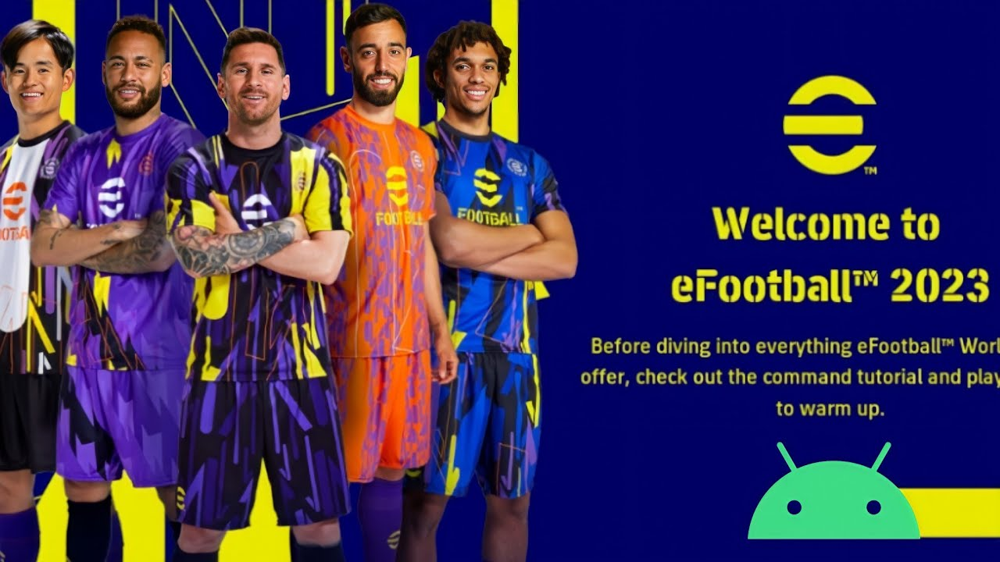

<!DOCTYPE html>
<html lang="en">
<head>
  <meta charset="UTF-8">
  <meta http-equiv="X-UA-Compatible" content="IE=edge">
  <meta name="viewport" content="width=device-width, initial-scale=1.0">
  <title>efootball</title>
</html>
  <head>
    <style>
      img {
        width: 2000px;
        height: 500px;
        background-size: 1000;
        background-position: 1000;
      }
      p {
        font-family: 'Roboto', sans-serif;
        font-size: 40px;
        color: blue;
        background-color: yellow;
        font-weight:bolder;
      }
    </style>
  </head>
  <body>
    
    <p>My favorite game is a eFootball also known as electronic football or digital football,refers to video games or online platforms that simulate the sport of football. eFootball games often feature realistic graphics, realistic gameplay mechanics, and real-life teams and players.They may be played on a variety of platforms, including consoles, computers, and mobile devices.</p>
  </body>
</html>
